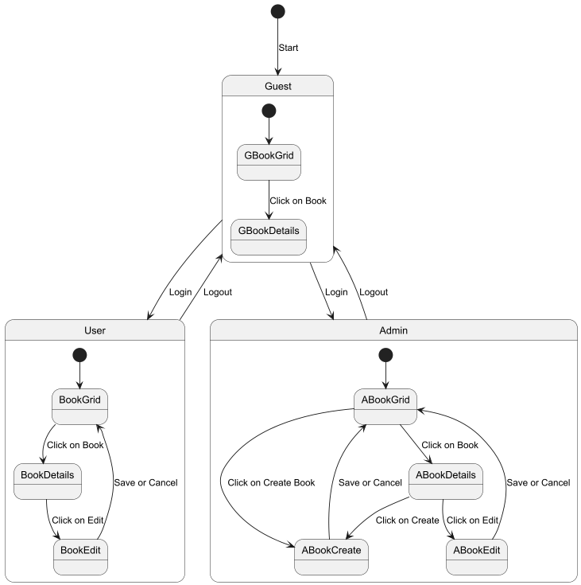
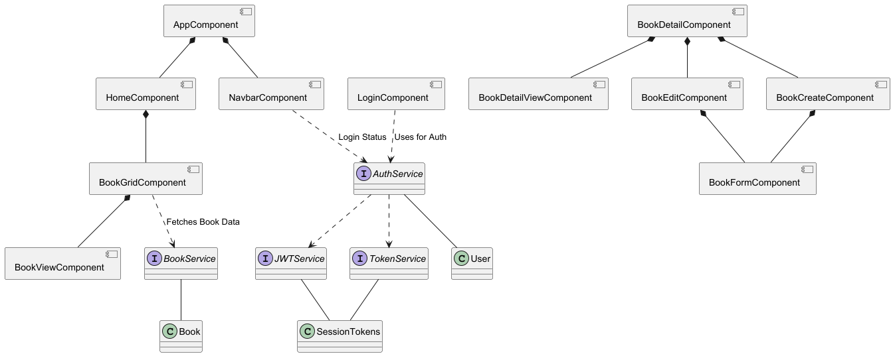
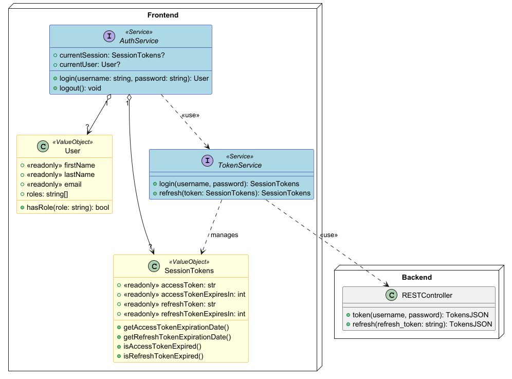

This project uses Docker Compose to manage services such as the NestJS application, Keycloak for user authentication and authorization, and Postgres for database management.
docker-compose.yml)In the development environment, the following services are set up:
3000.8080.keycloak/nest-realm.json.5432.postgres_data.8888 for web access.To Start the Angular Frontend:
cd angular-buch-frontend
npm install
npm start
Visit at http://localhost:4200 in your browser.
To start the application in development:
cd backend
docker compose up -d
To start the application in production (currently the same):
cd backend
docker compose up -d
docs/tsdoc/index.html


